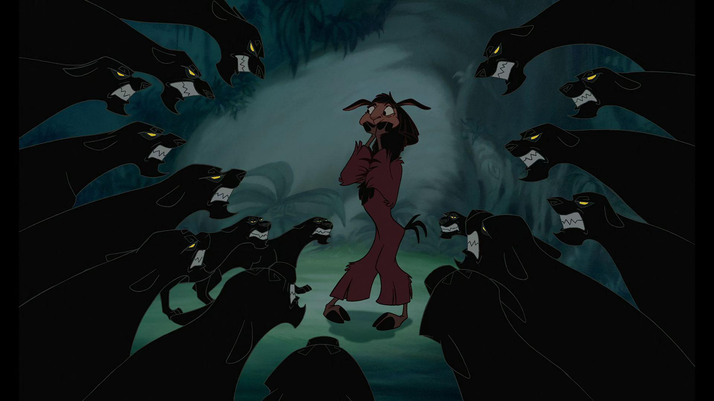

Mes articles
ATMA is here.
Au début je jouais à DX-Ball chez ma tante puis j'ai découvert le phishing sur Habbo Hotel, et maintenant je travaille au ministère de l'intérieur.
Depuis 2020, je code chez OCTO Technology Paris, où je mène des équipes qui créent des produits fructueux pour nos chers clients.
Je donne des conférences sur mes sujets du moment : coder le métier ; tester moins mais mieux ; découper du legacy.
J'ai co-rédigé le livre Culture API, les cheat sheets DDD Stratégique & GraphQL, et 7 magazines OCTO Mag.
En ce moment je fais vivre ce blog et j'anime le podcast ATMA Talks.
-
Manuel du tech lead efficace
J’en ai marre des tech leads mous.
-

Notes sur le Markdown
Un rappel concis de la syntaxe supportée par le générateur, pour écrire sans friction.
-

Bienvenue sur mon blog
Voici le premier paragraphe : c'est lui qui apparaît en extrait sur la page d'accueil, juste sous le titre. Tu peux aussi forcer un résumé avec le champ summary du front matter.